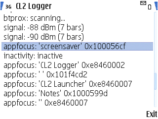

| Go to |
|---|
| CL2 |
| UIx |
| HIIT |
If you're in a hurry, just go download. Choose the build that you think is the best match for your device—the naming is somewhat comprehensible. If you have trouble picking the correct binary, or if the application fails to install or run, then read on.
To make proper use of ContextLogger2, one really ought to do a custom build with the most appropriate build configuration and software signing certificates. Typically one would do a "headless", auto-starting build of the logger and the associated software.
As building and signing is a hassle, and as invisible background processes do not make for a good demo, we have built and signed dedicated demo versions of the logger, ready for installation. They have the following characteristics:
ReadDeviceData capability is not grantable to self-signed applications.)

Downloads are available from:
The sisx installation packages are signed, while the sis ones are not. Unsigned packages can generally only be installed on hacked phones, and hence you may have to sign them yourself using Symbian Open Signed or a developer certificate. The self30 variants have maximum self-signed capabilities allowed on S60 v3.0 and v3.1, the self32 variants have maximum self-signed capabilities allowed on S60 v3.2-up, and the unsigned variants have maximum Symbian Open Signed capabilities. The set of sensors in the builds have been adjusted based on the capabilities. For example, the self30 variants do not include support for location sensors (which require the Location capability).
At least one of the builds should be suitable for you regardless of whether you have an S60 3rd Edition, 5th Edition, or Symbian^3 device.
The following build configurations are currently available:
| Signed Variant | Description |
|---|---|
demo_30_self30 |
S60 v3.0 self-signed. Only has a blank GUI, since the demo GUI is implemented in Qt, which is not available for S60 v3.0. Depends on Open C/C++. |
demo_31_self30 |
Like demo_30_self30, but includes functionality implemented in Qt, including a basic GUI. Depends on Open C/C++ and Qt. |
demo_32_self32 |
Like demo_31_self30, but with Location capability, and additional functionality enabled by it. Depends on Open C/C++ and Qt. |
demo_52_self32 |
Like demo_32_self32, but with Symbian^3 compatibility improvements. Not recommended for anything other than Symbian^3 devices. Depends on Open C/C++ and Qt. |
| Unsigned Variant | Description |
|---|---|
demo_30_unsigned |
Like demo_30_self30, but unsigned and with more capabilities, with the extra capabilities enabling more functionality. Depends on Open C/C++. |
demo_31_unsigned |
Like demo_31_self30, but unsigned and with more capabilities, with the extra capabilities enabling more functionality. Depends on Open C/C++ and Qt and Qt Mobility. |
demo_52_unsigned |
Like demo_52_self32, but unsigned and with more capabilities, with the extra capabilities enabling more functionality. Depends on Open C/C++ and Qt and Qt Mobility. |
The demo_30 variants may seem pointless as they display nothing. However, these variants also, when running, collect context data to the e:\data\cl2\log.db file.
Note that we do not regularly test the various self-signed builds as they are not that useful in real-world deployment scenarios, and hence it is quite possible that we make mistakes wrt what functionality we include in the builds. Particularly if you see "permission denied" errors, there is reason to suspect that we have included functionality that does not work with self-signed capabilities, and in such a case do let us know.
For the ContextLogger2 demo software to run, the following libraries must be installed on the device.
The version numbers given are recommended versions. Other versions may or may not work.
demo_30 build variants.
unsigned build variants.